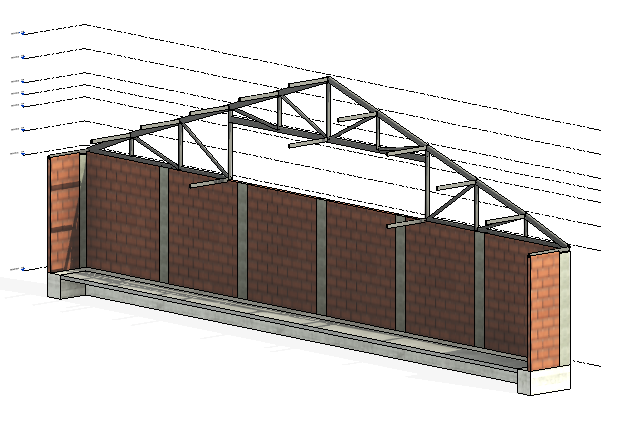
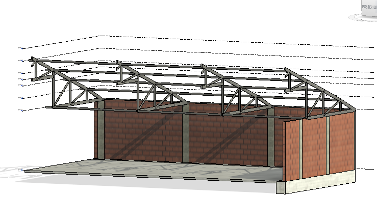
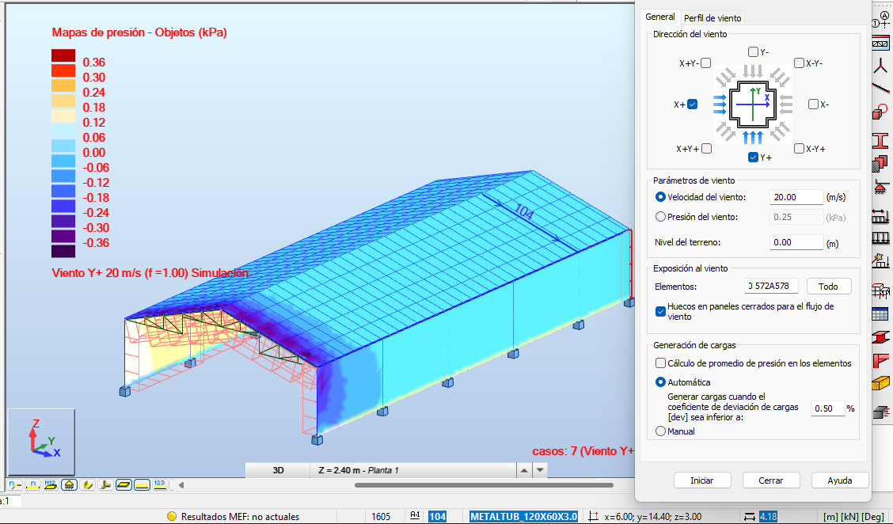
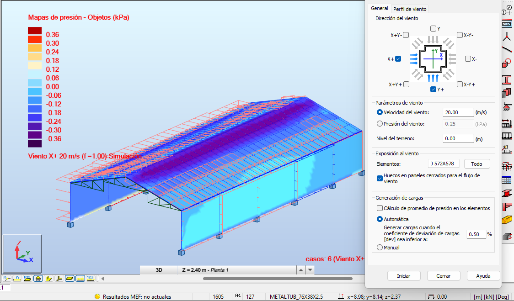

Estructura metálica
Cubierta Cerramiento B.A | Cercha tipo Pratt
Resumen ejecutivo
El proyecto Cerramiento B.A corresponde al diseño estructural de una cubierta metálica para el cerramiento de un lote urbano, concebida como una solución liviana, eficiente y de rápida construcción. La estructura se resolvió mediante una cercha tipo Pratt, seleccionada por su capacidad para distribuir esfuerzos de manera eficiente y garantizar estabilidad en luces considerables. El diseño se orientó a optimizar el uso de material, reducir peso propio y asegurar un comportamiento adecuado frente a cargas gravitacionales y acciones ambientales, logrando una solución funcional y técnicamente robusta.
Contexto y restricciones
- Uso: Cubierta para cerramiento en lote urbano.
- Tipo de estructura: Sistema metálico liviano.
- Restricción clave: Optimización de peso y eficiencia estructural.
- Condición: Adaptación a geometría del lote y requerimientos de cerramiento.
- Criterios: Estabilidad, servicio, economía y facilidad de montaje.
Solución estructural
La solución se planteó mediante cerchas metálicas tipo Pratt, las cuales permiten una adecuada distribución de esfuerzos entre elementos en tensión y compresión. Este sistema resulta eficiente para cubiertas de luz media, ya que reduce el consumo de material y mejora el desempeño estructural. La cubierta se complementa con elementos secundarios como correas metálicas, encargadas de soportar la lámina de cubierta y transferir cargas hacia las cerchas principales. El diseño buscó un equilibrio entre rigidez, estabilidad y economía, manteniendo un sistema constructivamente simple y eficiente.
Datos técnicos del proyecto
- Nombre: Cerramiento B.A
- Tipo: Cubierta metálica para cerramiento
- Sistema estructural: Cerchas tipo Pratt
- Material: Acero estructural
- Elementos secundarios: Correas metálicas
- Enfoque: Estructura liviana y eficiente
- Normativa: NSR-10 · AISC
Desempeño estructural
El sistema estructural fue evaluado considerando cargas gravitacionales, viento y condiciones de servicio, verificando la estabilidad global de la estructura y el comportamiento de las cerchas principales. La configuración tipo Howe permitió un adecuado control de esfuerzos internos, optimizando la relación peso-resistencia del sistema. El diseño garantiza una respuesta estructural segura, con deformaciones controladas y un comportamiento eficiente en operación.
Entregables
- Modelo estructural en SAP2000
- Diseño de cerchas metálicas
- Planos estructurales
- Definición de elementos secundarios (correas)
- Documentación técnica para construcción
Galería


